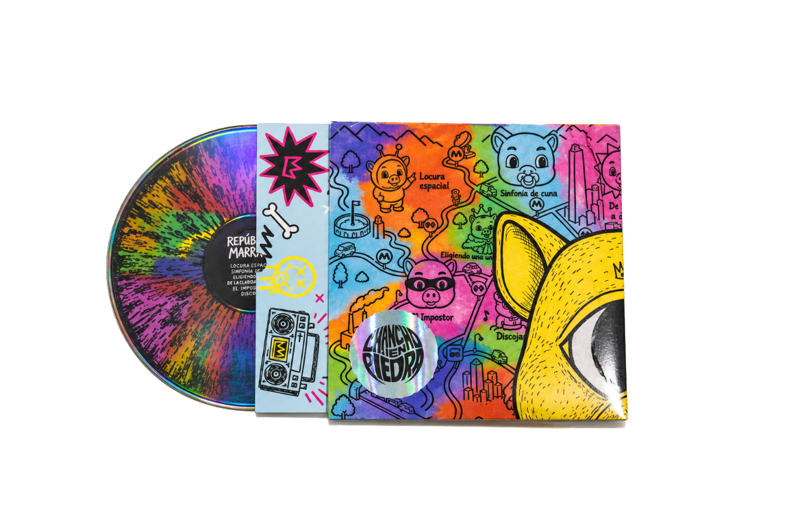
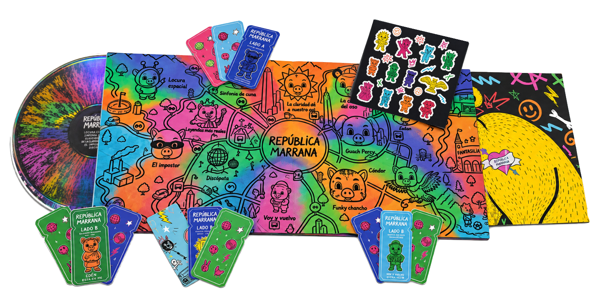
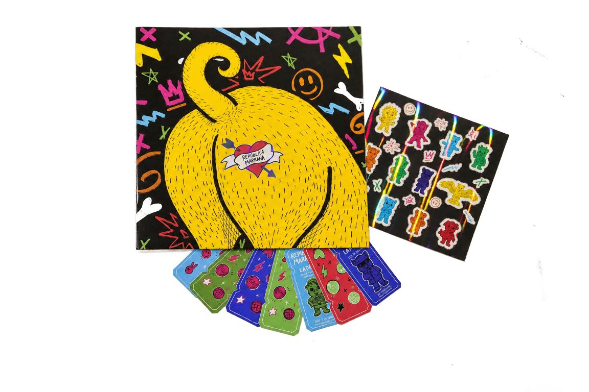
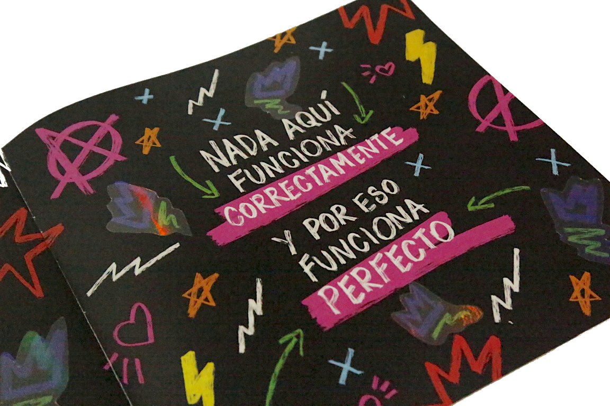

Remasterización
de vinilo

Una propuesta de diseño para la remasterización en vinilo de República Marrana, de Chancho en Piedra. La carátula, las ilustraciones y las piezas gráficas acompañan la música con un universo visual lleno de color y personajes.





 ← Volver a todos los proyectos
← Volver a todos los proyectos